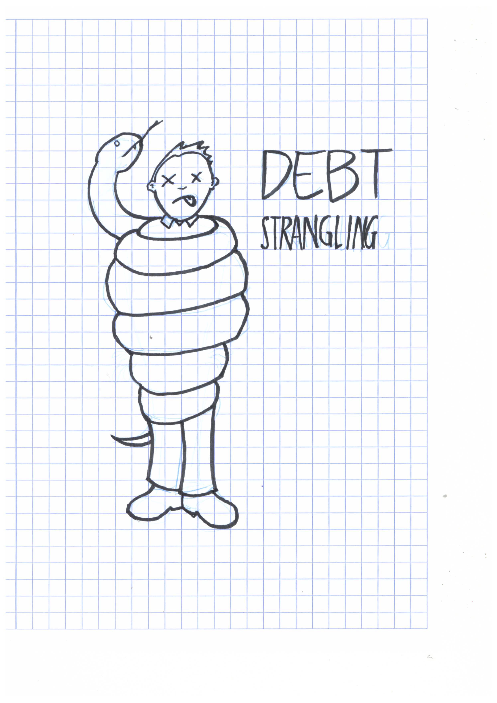

JS <3 @ AGCO
by Diogo Lucas / @diogoclucas
main characters

- CVT:~1975;1995
- tracking apps: 2010
- self-guided vehicles: 2013
oh, and also
dating (2014)
breaking monoliths apart
the strategy

marriage (2015)
remember FUSE?
RESTful APIs
- simple
- composable
- expressive
- open
node.js + mongo
- simple
- scalable
- expressive
JSON API spec
- composable
- standardized
- no bikeshedding

fruits of this union
harvester.js
A sample API
harvester({
adapter: 'mongodb',
connectionString: "mongodb://localhost:27017/test"
})
.resource('artists', {
name: Types.string().required().description('Artist name')
links: {
genre: 'genres'
}
})
.resource('genres', {
name: Types.string()
})
.listen(1730);
- link inclusion
- filtering
- sparse fieldsets
- cross-domain inclusions
- data event streams
elastic harvester.js
- aggregations
- primary and linked resource filtering interop
- JSON API feature interop
lessons from the trenches
automated (especially e2e) testing is your best friend
devops practices as enablers
break the heavy, bloated cycle
promises: easy to make, hard to keep.
definitely worth it, though
the hard art of chosing who handles more complex operations
entity relationship: DDD FTW
make your APIs self contained, allow cross-domain links
consider indexing across APIs
the road ahead
tks.
ref
-
AGCO open source projects
-
XKCD, home of awesome cartoons (like the standards one)